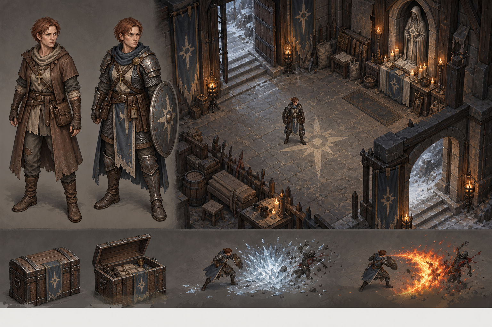
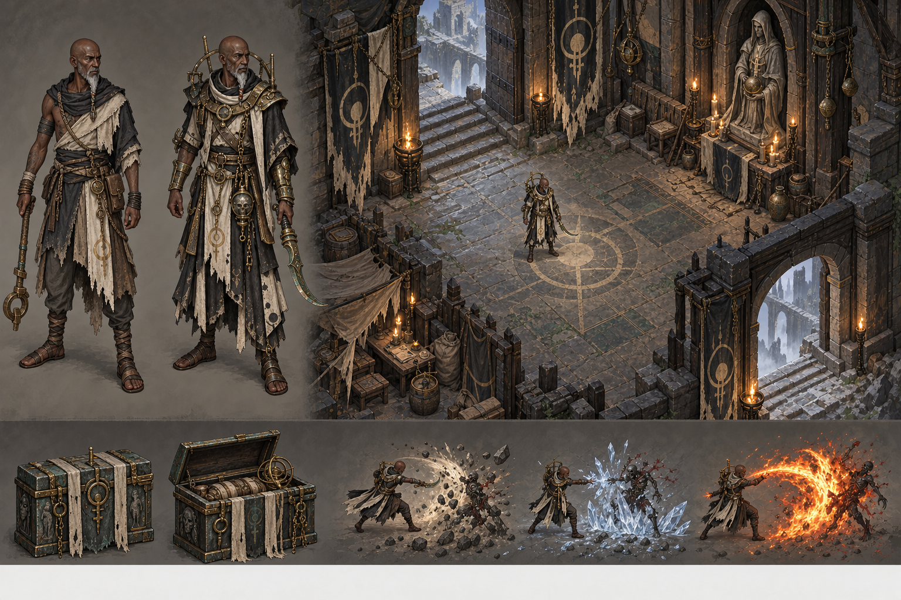
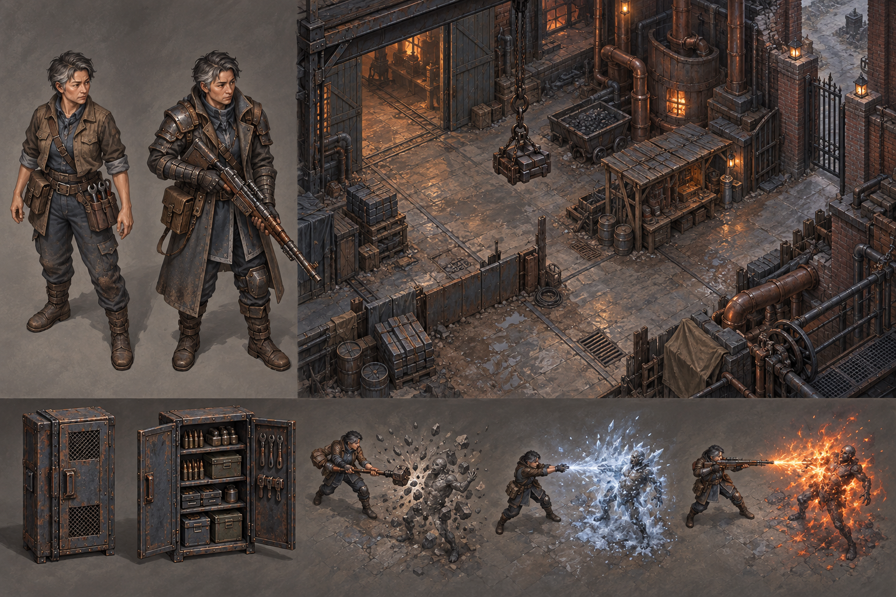
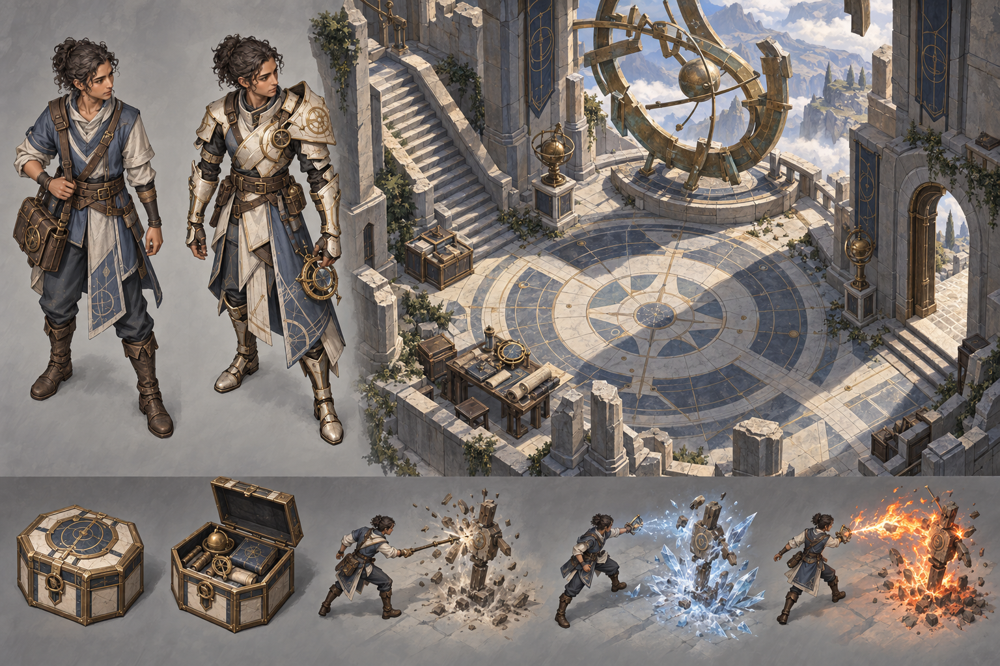
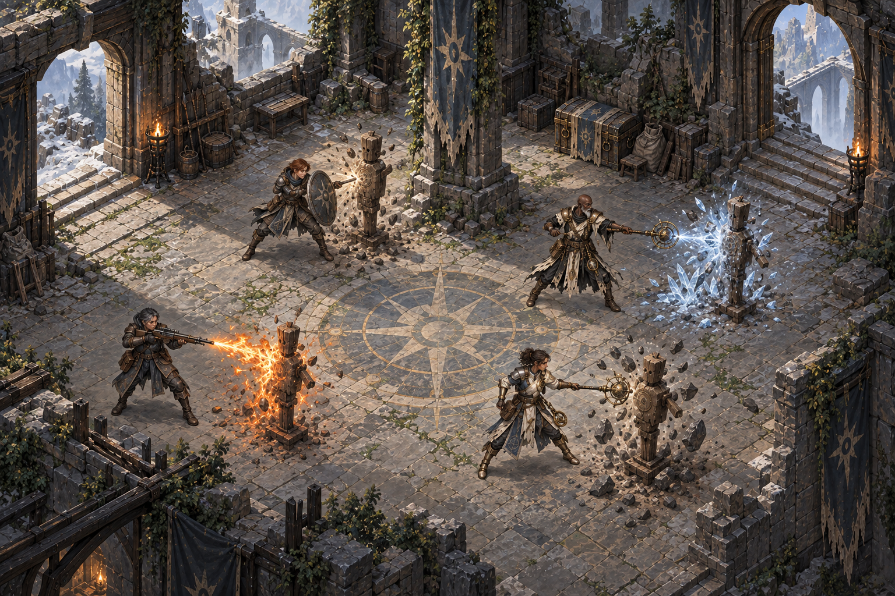

Concept review only. Godot is the shipping target; Pixi is the test harness.
Recommendation: keep the mixed scene’s restrained matte materials, shared neutral key light and grounded figures as the provisional visual target. Keep faction identity in construction and silhouette. Revise F02’s stronghold identity before approving the full faction set.
The four board labels below identify factions, not competing renderers or alternative styles. These are flattened paintings. They do not prove projection C, modular outfits, alpha edges, animation, interactive exits or reusable effects. Large character studies are illustration views; the mixed scene supplies the common environment context.
Measured lighting comparison · Actual rig-frame motion and its visual limits · Findings
Cohesive starter/advanced woman defender and sanctuary; two effect studies rather than requested3; full-height studies do not share the measured gameplay framing. Concept only.

Starter/advanced outcast differentiated and3 effect studies present; sanctuary-like room strongly repeats F01 composition/architecture, so stronghold distinctiveness is only partial.

Distinct industrial foundry; no gameplay-scale figure in room, reducing framing comparability.

Distinct open observatory; exposed-head starter/advanced identity and three effects. Room has no gameplay-scale figure; projection unmeasured.

Four distinct representatives and grounded common courtyard with three readable element treatments. Heads/limb poses and ice/fire silhouettes still distinguishable. Two physical targets rather than requested one; open exits drawn but no data alignment. Single flattened painting, no actual runtime separation.

Required choice: accept this provisional shared direction, specify changes, or delegate visual test selection to Codex while retaining production approval. No reply is not approval.